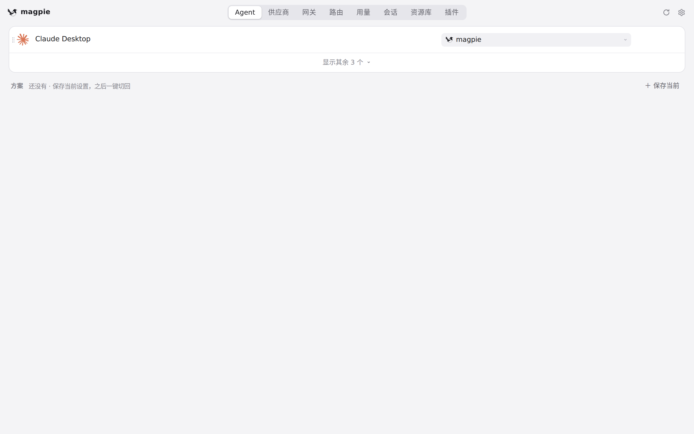
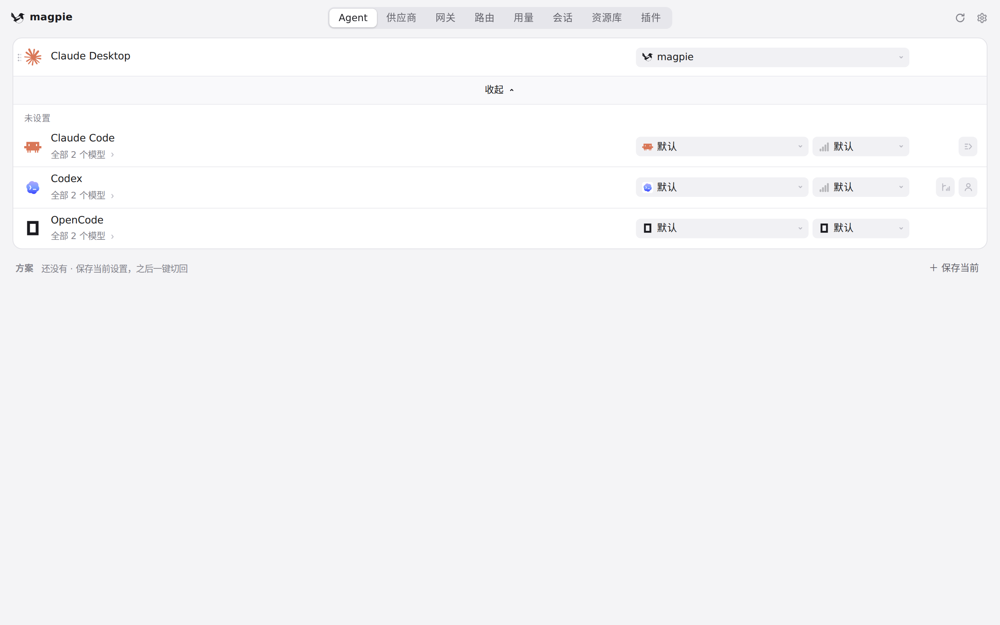
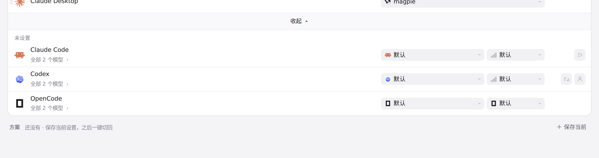
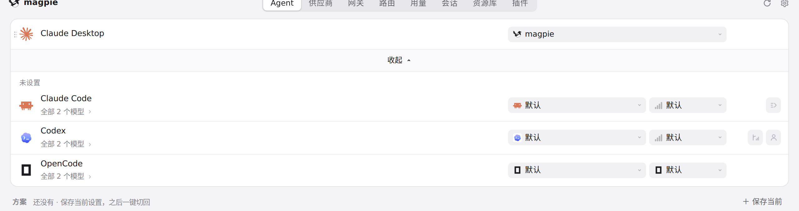
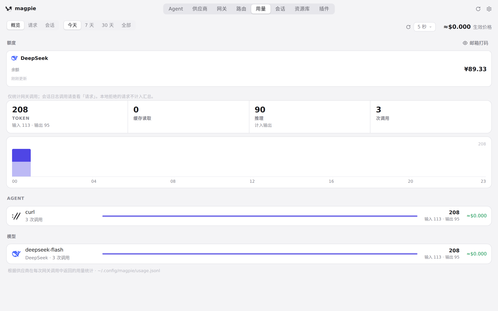

#391 界面预览
commit 402592a · 回到 PR · diff 给 magpie web 增加了一整套只在手机宽度（≤760px，或触屏且≤1024px）生效的响应式规则：顶栏与导航换行横滑、Agent 行的模型整行/effort 与额外按钮换行、用量统计卡与图表日期自适应、资源库头部、设置行、路由组与各表单控件放大换行，并让选择器弹出层尺寸不超过视口、触屏打开选择器时不再自动聚焦过滤框；同时把判定“手机”的断点从 600px 放宽到 760px（触屏 1024px）。
红线是鼠标走过的轨迹，红色圆环是一次点击；底部文字是这一步在做什么。空格暂停，← → 逐段查看。

Agent 行与字段选择器 · Agent 标签页的默认列表（1280×800）

Agent 行与字段选择器 · 展开后的 Agent 列表

Agent 行与字段选择器 · 展开后 Codex 一行的模型、推理强度与额外按钮

Agent 行与字段选择器 · 展开后 Claude Code 一行的模型与推理强度字段

用量页的合计与图表 · 用量页顶部的统计与图表
用量页的合计与图表 · 向下滚动后的用量页下部